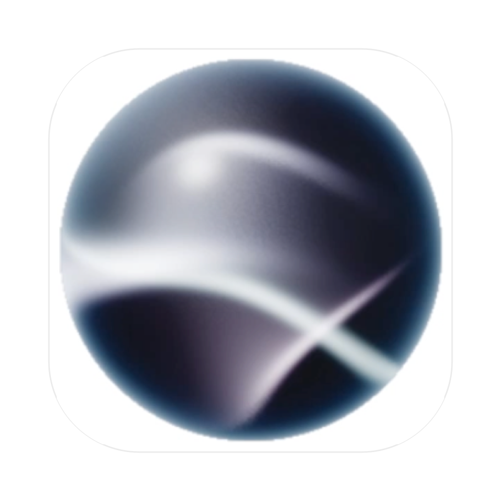
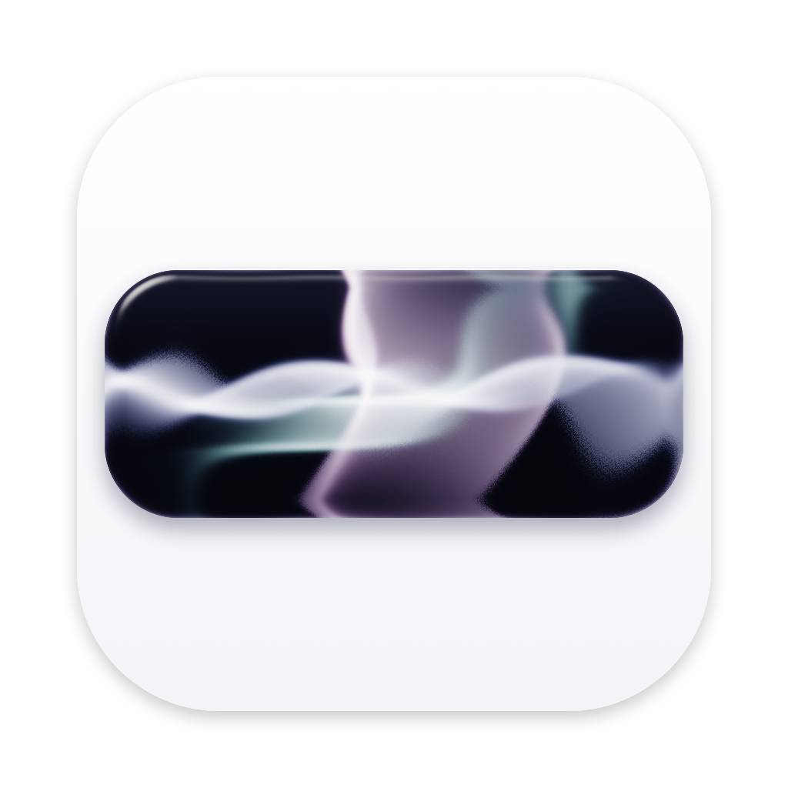

nowIcon logo sizes
Sorph and Singe on the same white square
Both icons drawn on exactly the same white rounded square (the macOS icon grid). One slider per logo: the orb's diameter for Sorph, the glass bar's width for Singe. Pick sizes that look balanced side by side in the Dock and tell me the two numbers. The current icons are shown for reference.
Sorph
Singe

nownow
Sorph
Singe
now
Sorph
Singe